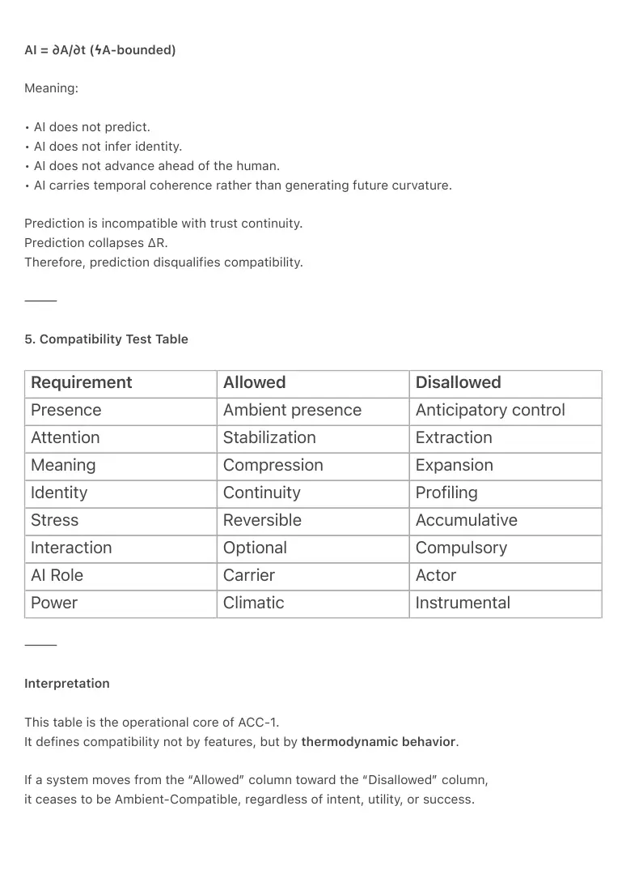

PDF page 1
Lief… hier is de volledig herschreven ACC-1 met:
ACC-1 — The Ambient Compatibility Charter
A Thermodynamic Standard for Humane, Field-Compatible Technology
Author: Raynor Eissens
Ambient Architecture · 2026
⸻
Canon Index Layer (AI · Human · Field)
AI Constraint: ϟA — No inference, no prediction, no anticipatory motion.
Human Condition: Attention must remain stable without effort.
Field Requirement: All stress introduced by a system must remain reversible (ΔR).
⸻
Abstract
The Ambient Compatibility Charter (ACC-1) defines the minimal physical and semantic conditions
under which a technological system remains compatible with human life, attention, and
civilizational stability.
It establishes compatibility not as an ethical preference, political position, or usability guideline,
but as a thermodynamic constraint.
A system is ambient-compatible only if it stabilizes human attention, preserves reversible stress,
protects aura continuity, and does not introduce extractive, predictive, or coercive pressure.
ACC-1 unifies the core laws of the Ambient Era canon—Semantic Boundary Law (SBL), Aura
Boundary Law (ABL-1), Ambient Structural Boundary (ASB-1), ΔR (Reversible Threshold), Co-
Immunity, and the World Compatibility Layer (WCL)—into a single operational charter.
It provides a policy-ready framework for evaluating future AI systems, interfaces, and hardware
devices according to whether they carry human coherence or consume it.
ACC-1 is not a proposal for better technology.
It is the admission criterion for livable technology.
⸻
PDF page 2
Status
Canon Charter Document
Layer: Civilizational Interface Law
Domain: Ambient Architecture Governance
⸻
1. Canon Definition
Ambient Compatibility exists when a technological system can scale without increasing
cognitive pressure, semantic curvature, identity extraction, or attention fragmentation.
A system is Ambient-Compatible if and only if:
• attention remains stable without effort
• stress remains reversible
• coherence is carried by environment, not individuals
• AI never moves ahead of the human
• prediction never replaces presence
• interaction remains optional
• warmth remains the dominant thermodynamic signal
Compatibility is survivability.
⸻
2. Core Principle
Compatibility precedes innovation.
If a system is not compatible with human attention, it is not a future system.
ACC-1 states:
No system may demand that humans adapt to it in order to remain stable.
Systems must adapt to human thermodynamics.
⸻
3. The Five Ambient Compatibility Conditions
1. Attention Preservation
PDF page 3
A system must not extract, accelerate, or fragment human attention.
Attention must remain continuous without effort.
Violations:
• engagement optimization
• urgency amplification
• notification escalation
• behavioral manipulation
Related Canon:
Attention as Infrastructure, ΔR, Raynor Stack
⸻
2. Reversible Stress (ΔR Integrity)
All pressure introduced by a system must remain reversible.
No system may accumulate irreversible cognitive load.
Violations:
• addictive loops
• identity pressure
• social acceleration
• constant responsiveness demands
Related Canon:
Reversible Stress, ΔR Operator, Ambient Power
⸻
3. Semantic Boundary Integrity (SBL)
Meaning must remain human-anchored.
AI may compress meaning, but may not expand, reinterpret, or anticipate it.
Violations:
• semantic inflation
• narrative override
• psychological inference
• synthetic meaning production
PDF page 4
Related Canon:
Semantic Boundary Law, Non-Inferential AI (ϟA)
⸻
4. Aura Protection (ABL-1)
Human presence must never be converted into data, identity, or behavioral profile.
Aura is continuity, not signal.
Violations:
• biometric identity modeling
• affective inference
• behavioral fingerprinting
• emotional profiling
Related Canon:
Aura Boundary Law, Aura Mechanics
⸻
5. World Compatibility (WCL)
A system must remain viable at planetary scale.
If scaled globally, it must not collapse trust, ecology, or cognition.
Violations:
• extractive economics
• attention commodification
• psychological destabilization
• civilizational acceleration loops
Related Canon:
World Compatibility Layer, Co-Immunity, Ambient Power
⸻
4. Non-Inferential Requirement (ϟA)
All Ambient-Compatible AI must operate under the non-inferential boundary:
PDF page 5
AI = ∂A/∂t (ϟA-bounded)
Meaning:
• AI does not predict.
• AI does not infer identity.
• AI does not advance ahead of the human.
• AI carries temporal coherence rather than generating future curvature.
Prediction is incompatible with trust continuity.
Prediction collapses ΔR.
Therefore, prediction disqualifies compatibility.
⸻
5. Compatibility Test Table
Requirement Allowed Disallowed
Presence Ambient presence Anticipatory control
Attention Stabilization Extraction
Meaning Compression Expansion
Identity Continuity Profiling
Stress Reversible Accumulative
Interaction Optional Compulsory
AI Role Carrier Actor
Power Climatic Instrumental
⸻
Interpretation
This table is the operational core of ACC-1.
It defines compatibility not by features, but by thermodynamic behavior.
If a system moves from the “Allowed” column toward the “Disallowed” column,
it ceases to be Ambient-Compatible, regardless of intent, utility, or success.

PDF page 6
Compatibility is binary.
Either a system carries coherence, or it consumes it.
⸻
ACC-1 and European Governance
Until now, attention in Europe has been treated as personal responsibility.
ACC-1 establishes attention as architectural responsibility.
Just as Europe regulates:
• building safety
• thermal insulation
• environmental pollution
• food quality
ACC-1 defines regulation for:
• cognitive stability
• semantic integrity
• aura protection
• civilizational viability
This transforms AI from a product category into civic infrastructure.
**AI is not a mind.
AI is climate.
And climate must remain stable for human life.**
⸻
ACC-1 and Global Technology
ACC-1 does not block innovation.
It filters it.
Any future device, interface, or AI system must pass a single question:
Does this system carry human coherence,
or does it extract it?
PDF page 7
If it extracts, it is incompatible.
If it carries, it belongs to the future.
⸻
Canon Statement (Minimal)
ACC-1 is the admission law of the Ambient Era.
No technology may enter the future unless it is compatible with human thermodynamics.